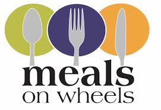

Meal on Wheels

Meals on Wheels is a program that delivers meals to individuals at home who are unable to purchase or prepare their own meals. The name is often used generically to refer to home-delivered meals programs, not all of which are actually named "Meals on Wheels". Because they are housebound, many of the recipients are the elderly, and many of the volunteers are also elderly but able-bodied and able to drive automobiles.